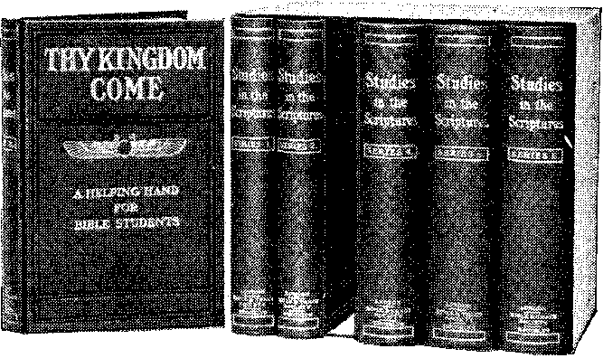

VOL
BROO KT VN. N. Y.
IS THERE A LACK OF CONFIDENCE IN THE MINISTRY?
Rev. Charles E. Newlin addressed the regular monthly meeting of Methodist preachers in Atlanta some time ago, and In the course of his address Mr. Newlin used the words: “I can prove by 99 per cent, of the business men of Atlanta that they lack confidence in the real, time manhood of the preachers of the city.”
The Rev. B. Frank White, in leaving the pastorate of the First Presbyterian Church, of Connellsville, Pa., is quoted as saying: “A man can’t be honest in the ministry and hold his job.” As Mr. White expects to remain in the ministry, although seeking another field, the inference is that he prefers a station where he can preach the Word in a style more in keeping with his conscientious scruples.
The writer is inclined to believe that both of the assertions above quoted are rather broad, if not more or less exaggerated. We believe that the great majority of ministers are honest, and are doing all in their power to advance the cause of religion here on earth; we also believe that there are some in the pulpit who have no right to be there. The vision they saw in the clouds, “G. P. C.,” meant not to “Go Preach Christ,” as they imagined, but to “Go Pick Cotton.” —South Georgia Progress.
* * *
Why Ministers Deserve Sympathy.
Christian ministers deserve considerable sympathy. They are at the present time lr> a very trying position. It is the conscientious ones who are in trouble. Behind them are the creeds and theories of the Dark Ages, to which they are chained:
(1) By the vows which they took at their ordination.
(2) By the honor of their position in the sight of their friends and neighbors.
(3) By their financial necessities and those of their families.
Ministers possessed of an education know not only that the creeds of the past are in conflict with each other and with reason, but also that those creeds are in conflict with the Bible. Better translations and older MSS. have shown us the fallacy of deductions made by our forefathers. Every educated minister now knows that the Hebrew word translated “hell” in the Old Testament Scriptures, means the tomb—the state of death—the only hell that was known for four thousand years. They know that in our Common Versioji of the Bible this word Sheol is translated grave and pit more times than it is translated hell. They know that it never means and never did mean, anywhere, a place of Are and torture.
Baptist ministers have gotten out a new Bible, in which they go to the trouble of translating this word Sheol by three English words, “the under-world.” This hides the truth from the average mind about as much as the mistranslation hell does. But it helps our Baptist friends a little in dealing with Sheol, for of course, in the grave, in the tomb, is in '‘the under-world.” Of course nobody thinks there is another world of living people in the center of the earth. It is only the dead that are in the under-world —in the tomb.
All educated ministers know further that the word Hades, in the New Testament translated hell, is the Greek equivalent of the Hebrew word Sheol, and likewise means the under-world, the tomb, the state of death or condition of death. The trouble with these ministers Is that they know that their congregations are not generally aware of the truth on the subject, and they fear to tell those truths lest they should be accused of having practiced deception in the past, when, as a matter of fact, they had simply taken from theologians of the Dark Ages what they in turn gave to the people, without examining the Scripture proof.
Honesty to God and Religion Most Commendable
Another difficulty confronting these ministers is this: For the past twenty years the colleges of the United States, Great Britain, Germany, etc., have been teaching the Evolution Theory—that man was not created in God’s image, that he Was not in God’s sight “very good,” and that he did not fall down from Divine favor. It teaches, on the contrary, that he was an evolution from the ape, and (Continued on page 2, column 1)
HOW JESUS PREACHED TO
THE SPIRITS IN PRISON
'‘Christ also hath once suffered for sins, the Just for the unjust, that He might bring us to God, being put to death in the flesh, but quickened in the spirit, by which [two experiences—death and resurrection] He preached unto the spirits in prison.” -—1 Petek 3:18, 19.
THIS text has been made the basis for 1 some peculiar presentations. From it some have deduced an intermediate state lasting between death and the resurrection. Others have claimed it as an authority for the doctrine of Purgatory. The difficulty in every case seems to be the failure to remember that the Bible always and everywhere teaches that the dead are really dead, that they know nothing, and that, therefore, it would be impossible to do any preaching to the dead humans. Undoubtedly the theory that people are more alive after they die than when they were alive, is responsible for nearly all the foolish things which we have all at some time professed tc believe.
Before dismissing the thought that these “spirits in prison" are human'spirits, let us note the fact that to say, “human spirits,” is an absurdity of itself, because human beings are not spirits, and spirit beings are not humans. “Who maketh His angels spirits” is the Scriptural proposition. True, we do sometimes speak of humans as possessing a spirit of life, but by this we merely mean that they possess the power or energy of life, and the same would be equally true of the lower orders of creation, beasts, fish, fowl, etc.
Again, we sometimes speak of the Church as spirit beings—begotten of the Holy Spirit. Thus the Apostle speaks of the natural man in contrast with the New Creature, a spirit being. To appreciate this statement we must remember that the Church class receives the begetting of the Holy Spirit to the end that, if faithful, they may attain unto a spirit resurrection and become spirit beings, like unto the angels and like to the Redeemer. But we are not spirits yet, except by faith—-by hope. However, the context shows that the Apostle had no reference to the Church, either; we were not in prison; we received the Message of salvation through the Apostles.
Spirits Once Disobedient.
The spirits to whom the message was given had proven themselves disobedient, says St. Peter. He even tells us the time of their disobedience, namely, that it was “in the days of Noah, while the ark was preparing.” Surely, if noticing these particulars mentioned in the context, no one would be excusable for misunderstanding this Scripture and considering it in any way applicable to humanity of our day or to humanity in general. However, it is helpful to us to learn the full particulars of the matter. What was their disobedience, and when and how were they imprisoned?
Turning to Genesis 6:1-5, we find there the cause of the disobedience of those angels, who for a time had been permitted to see what they could do for the uplift of humanity, or, rather, permitted to demonstrate that the downward tendency of sin is incurable except in the manner which God has already arranged for through Messiah and His glorious reign of a thousand years.
Instead of those angels helping mankind out of sin they helped themselves into sin, and by so doing they increased the depravity amongst humanity, until the astounding record is that “the wickedness of man was great in the earth, and that every imagination of the thought of his heart was only evil continually.” The particular sin of those angels was that when they were granted the privilege of materializing—of taking human bodies for the sake of helping and instructing mankind—they misused this power and took to themselves the daughters of men for wives.
Thus these angels came gradually to prefer to live as men amooigst men, and to rear earthly families, rather than to
WHI KE AKE THE IIEAIH
This article was published in Vol.
J 1. No. 3. The great demand for N V copies of it has been remarkable. A J sample copy will be mailed to any Jx ■7] one free. Address, Bible Society, 13 u J Hicks Street, Brooklyn, N. Y. N abide in the condition in which they were created—spirit beings, higher than humans. Not only was this wrong in the sense that it was taking a course in opposition to the Divine arrangement, but it was wrong also because the thing was done for the cultivation and gratification of lust, and it led to their own moral defilement as well as having a baneful influence upon humanity; for we can readily see that for the angels, of superior powers and intelligence, to become leaders in lustful practices would mean a great influence upon mankind toward sin and defilement of mind and body.
We are particularly told that the offspring of this improper union between the angels and the daughters of men were giants, both physically and mentally superior to the fallen human family—“men of renown.” And this statement, that they were “men of renown,” was at a time when manhood’s estate was reached at a hundred years, and implies that God did not interfere to hinder or stop the progress of sin for perhaps several centuries. In the meantime the race had become so corrupt that apparently only Noah and his family were uncontaminated—all others had more or less come under the influence, directly or indirectly, of these fallen angels or their giant sens. Hence, of Noah it was written (not that he was a perfect man, but), “Now Noah was perfect in his generation” (uncontaminated) and his family apparently the same. Hence these alone were saved in the ark, while all the remainder, more or less contaminated, were destroyed by the flood.
"In Chains of Darkness.”
It was then and there that God imprisoned those spirits, angels, who kept not their first estate, and are, therefore, called fallen angels, devils, demons. They were not imprisoned in some far-off world called hell, nor are they engaged there in stoking fires for the torture of poor humanity. Following the leading of the Scriptures we find that when the flood came they were not destroyed, because, while their fleshly bodies which they assumed might indeed perish, yet they would merely dematerialize, or assume their spirit conditions again.
The record is that God cast them down, that He condemned them to an overthrow—that they might not any longer associate with the holy angels, but must be reserved in tartarus—our earth’s atmosphere. Here they were imprisoned, not in a special place, but in the sense of having their liberties restrained, “in chains of darkness.” They were no longer permitted to materialize, and thus to associate with humanity. These things are distinctly told us by St. Jude and St. Peter (Jude 6; 2 -Peter 2:4, 5)—an explanation in full harmony with the Genesis account of their fall.
Once Disobedient—Still Disobedient.
We, of course, cannot know that all of those fallen angels are still in a disloyal condition of heart. On the contrary, in harmony with our text, we may suppose that some of these fallen angels have since repented of their wrong course, and it would be none too strong a way to state the matter—that any such repentant ones would surely have terrible experiences as a result. To be obliged to be in close touch and relationship with the more evil and malignant ones, and to have knowledge of all their evil designs and efforts, would be a terrible experience, and, besides this, we may be sure that the rebellious would not hesitate to persecute the repentant ones in every conceivable manner, as they would be lawless, regardless of the Divine will.
On the other hand, the repentant ones would be obliged to restrain themselves and to not render evil for evil, knowing that this would be contrary to the Divine will. In other words, repentant ones amongst those fallen spirits, influenced by the preaching of Jesus, or otherwise, would have a kind of purgatorial experience, and the very thought calls forth our sympathy.
When imprisoned or cut off from the privilege of materialization, many of th® fallen spirits, we know not what proportion, continued their active opposition to God, after the manner of Satan. Henc® they are spoken of as his angels, his messengers, his servants, and he is spoken of as Beelzebub, the Prince of Demons. Satan, who sinned much earlier than the others, and in a different way, the Scriptures tell us was an angel of a higher rank, or a higher nature, and this superiority of his has made him the Prine# or ruler over the hosts of fallen spirits.
Fighting Against God.
The fight of Satan and his fallen angels is against God, against all who are In harmony with Him, against all the regulations of righteousness, and against all the channels and servants whom the Lord may use. St. Paul’s words along this line are forceful; he remarks that God’s people contend not merely “with flesh and blood,” but also “with wicked spirits in high positions,” and the question arises, “Who is sufficient for these things?” The reply is that none is sufficient; without the aid of the Redeemer His Church would be quite overcome and vanquished by evil.
Likewise, without the Redeemer’s aid through His Kingdom, without the binding of Satan, without our Lord’s releasing of the world from the bondage of sin and death, there would be no hope ox the world’s recovery from its present bondage. But with the Apostle we exclaim, “If God be for us, who can b» against us?”—Romans 8:31.
Through Mediums and Obsessions.
Satan’s original plan of attack was to bring our race under his influence by misrepresentation—by putting darkness for light and light for darkness—for instance, the temptation under which Mother Eve fell. Satan there represented himself as Eve’s friend, giving her sound advice. He represented God as having a selfish motive behind His command that our first parents should not eat of the tree of the knowledge of good and evil. Satan declared that God had told an. untruth when He said that the penalty for sin would be death. Satan declared that man cannot die.
And has he not since kept up the same line of falsification? And has he not deceived the whole world upon this very subject? Do not all peoples in every land believe that when a man dies he does not die, but gets more alive—exactly Satan’s lie of the first instance? How few have believed God, even amongst His people who truly love Him, and who truly desire to believe the teachings of His Word! We have all been under a kind of “hoodoo.” “The god of this world [Satan] hath blinded” our minds on this subject. We are now coming to see that death is the penalty for sin, and that the resurrection is the salvation which God has promised and will provide.
Satan has had powerful allies and servants in the fallen angels, and it is through their persistence that his lie has triumphed over the Divine Word of Truth— “Dying, thou shalt die.” These fallen spirits have made various manifestations in every land for centuries, and thereby have apparently substantiated the theory that a dead man is more alive than when he was alive. Knowing that mankind would have nothing to do with them if their real personality were known, they hide their personality, and represent themselves as our dead friends who desire to speak with us, either directly os through mediums.
A further desire of these angels is tc obsess or to get possession of a human being. Being chained, or restrained from the privilege of materialization, the next most desirable thing, in their estimation, is to gain control over a human being, and to use his body instead of their own. This is styled obsession, and persons sc afflicted today are sent to an insane asy-lum, where, it is estimated, they constitute at least one-half of the entire number. In the days of our Lord these were not mistakenly supposed to be insane, but rightly declared to be obsessed. All remember the New Testament account that our Saviour and His Apostle® cast out fallen spirits from humanity.
"Know Ye Not That the Saints Sha88 Judge Angels?”
We need not discuss this question with Bible students, for it is too well recognized to be disputed. We suggest »> topical study of this subject by all at (Continued on page 2, column 2)
Muttiljly
Pl Ol.ISIir.I) AT
13-17 HICKS ST.. BROOKLYN, N. Y.
C. W HEK, Editor.
Monthly—1 2 cts. a year. Single copies, lc.
An Independent, Unsectarian Iteligi«>us Newspaper, Specially Devoted to tlie Forwarding of tlie Laymen’s Home Missionary Movement for the Glory of God and Good of Humanity.
(Continued from page 1, column 1.) Instead of faffing has been rising in the scale of intelligence and getting nearer to God’s image every year, all the time.
Following the Evolutionists came the Higher Critics, declaring that the Bible is really old wives’ fables and not at all Inspired. Nearly all graduates of colleges and seminaries for the past twenty years have gone into pulpits, consecrated to Ijhe preaching of God’s Truth from the Bible standpoint, in violation of whatever conscience they have.
These generally are the great and popular preachers of all denominations. They consider not the vows of their ordination, but practically say, “We do not hide our unbelief to any great extent. We answer questions of the people with a measure of candor, dodging occasionally; and if they know anything about the Bible themselves, they know that we do not believe in its inspiration. If they wish to continue us as their preachers, and to honor us and to pay our salaries, we will continue to serve them. By and by we will get their faith in the Bible thoroughly undermined; and then we will come out into the open. Then we will tell them that we falsified a little for their good, as a mother would tell her babe a fairy story for its entertainment.”
The preachers who are in trouble are the conscientious ones who believe the Bible to be true, and who have not yet gotten their bearings. They cannot long believe in an eternity of torture, yet are afraid to follow the course of the International Bible St-udents Association in a thorough Bible Study which ignores the creeds. These poor men know not what to believe, and are in great trepidation when a question is asked them by the people who pay them for religious advice. They cannot dig. To beg they are ashamed. And to tell the whole truth about what they know and what they do not know respecting the Bible they are afraid. They have our sympathy.
Our advice to all such is, “Tell the truth and shame the devil!” Take your stand for what truth you see, and seek for more light upon God’s Word in this glorious dawning of the New Era, in which God declares that He is pleased to give an increase of light on things Divine. “The wise shall understand, but none of the wicked [or hypocrites] shall understand.”—Daniel 12:10.
It would appear as if we are living in the time of special testing so clearly foretold by the Lord. Everything hidden would be uncovered, He said. He will bring to light the hidden things of darkness. (1 Corinthians 4:5.) If we would not be put to shame before Him, we must be honest. Who can doubt that honesty, especially in respect to God and religion, is most estimable from the Divine standpoint? None of us have anything whereof to boast. But if we are honest with our God we can look up to Him, by faith realizing that we are acceptable through Jesus Christ our Lord.
EXTRAORDINARY SERIES OF D1S-f; COVERIES,
The twelve years ending with the discovery of the South Pole are as full of dramatic achievement as the days of Drake and Raleigh, for not even in ‘those times was there a more extraordinary series of discoveries and conquests.
In 1900 only one man had been the length of Africa by land, and the Cape to Cairo Railroad was but a dream. There was not a railroad across South America. A great part of Siberia was without rail or road except the old caravan trails. China was practically without railroads. Lhassa was unknown, forbidden to the white man. During a century and a half men had tried to reach the South Pole, and failed; and the North Pole had baffled the efforts of 400 years.
Within a dozen years white men have traveled over the great desert, visited Lake Chad, made a protectorate over Timbuctoo. The days of the Mahdi at Khartoum are ended, and any tourist may travel there comfortably by rail. The Cape to Cairo Railroad is an assured fact. The heart of Africa is now no more remote from the popular imagination than Oklahoma City wafc in 1900.
In South America, the Trans-Andean Railroad is in full operation across the continent, as the Trans-Siberian is across Asia. Even China has her railroads. Lhassa has been visited by a British army, and both poles are the common property of every fireside that boasts of books, magazines or newspapers.
Such a record may justify a feeling of pride that the spirit of conquest and adventure is as alive as ever, and accompanied with all the courage and hardihood that blessed any earlier generation.— Exchange.
(Continued from page 1, column 4) oup readers. See how many times Jesus Slid the Apostles cast out demons, and note the particulars. Although we still $HTve with us spirit mediums, and many dbsessed, we cannot know whether the proportionate number is greater or fewer than in our Lord’s day. Since the world’s population today is so much larger, the sj-me number of evil spirits (which do not increase) would show proportionately fess. But, however that may be, we may assume that some fruitage resulted from fFre great sermons preached to these in Connection with the death and resurrection of our Lord, respecting which St. Peter tells us in our text. Additionally, St. Paul remarks, “Know ye not that the saints shall judge angels?” (1 Corinthians 6:3.) We do know that the holy angels need no judging, no trial, hence the Apostle must in some way refer to a trial [)r judgment or testing of these spirits in prison who were once disobedient, in the days of Noah. And if the judgment or testing is a part of the Divine plan, it implies a hope for them, and in conjunction with St. Peter’s statement in our text it gives the reasonable inference that the preaching which Jesus did to them was not wholly in vain.
How Jesus Preached in Death.
Here arises another question: If Jesus was really dead, as the Scriptures declare, if “He poured out His soul unto death,” and “made His soul an offering for sin,” and His soul was not raised from the dead until the third day after His crucifixion, how could He in the meantime preach to spirits in prison, or to anybody else? We reply that He could preach in the same way that the Apostle refers to, saying, “He, being dead, yet speaketh” (Hebrews 11:4); and again, in the same way that the blood of Abel is said to have cried to God—figuratively. Of one thing we are sure, namely, that Jesus gave no oral
THE CHRIST OF PROPHECY
“Moses truly said unto the fathers, CA Prophet shall the Lord your God raise up unto you among your brethren like unto me. To Him shall ye hearken in all things whatsoever He shall speak unto you. And it shall come to pass that every soul which will not hearken to that Prophet shall be utterly destroyed from among the people.3 ”—Acts 3 :22, 23.
QUR text is the testimony of the Apostle Peter, and must, therefore, be accepted by all believers in the Bible. Nevertheless, many of us for a long time had difficulty in our effort to harmonize this statement with the facts in the case. We said, “Where do we find the correspondence between Moses, the great lawgiver of Israel, and the Lord Jesus as his Antitype?” We read in the Law of Moses respecting the sacrifices and sin-offerings which he instituted, and in this could find foreshadowings of the “better sacrifices” of Christ; but wherein Christ fulfilled the Apostle’s statement has indeed been a difficult matter.
We said to ourselves, “In what sense can it be true that whosoever does not hear and heed Christ is ‘utterly destroyed from amongst the people’ ”? The heathen have never heard in any sense of the word—are they utterly destroyed? The great majority of people in civilized lands have never heard in the sense here intimated, in the sense of heeding the commands of Christ; are they utterly destroyed? True, it would be far better that they should be utterly destroyed than that they should be eternally tormented, as many have imagined, but as the Scriptures do not teach. Nevertheless, would it not seem too bad that the great mass of humanity, even in our day, should thus be condemned to utter destruction because they have not heard and not heeded the voice of Christ?
The Hidden Mystery.
The Apostle repeatedly tells us about the “mystery” hid from past Ages and Dispensations, but now due to be understood by the saints—not by the world. (Ephesians 3:3-9.) • This mystery, or secret, not generally comprehended, the Apostle explains, is “Christ in you, the hope of glory.” (Colossians 1:27.) In other words, he would have us understand that God’s Plan for the salvation of the world is much greater, much larger, than any of us would have suspected—that it includes, first of all, the selection of the Church of this Gospel Age as members of the Body of the great Christ, under Jesus their Head. (Ephesians 1:22, 23.) This whole company, the Head and the members, will therefore constitute The Christ of prophecy—“like unto Moses.” So, then, only those who recognize this “mystery,” this secret, are prepared to rightly understand our text and many other matters and statements of the Scriptures.
Our text is not yet fulfilled, but awaits fulfilment until the entire Christ (Head and Body—Christ Jesus the Head and the Church which is His Body) shall have beer “raised up.” Our Lord, the Redeemer and Head, has already been exalted, and His Church for nearly 1900 yea«s has been in process of selection, formation and testing. In the Harvest of this Gospel Age the union between the Head and the members is promised, for our Lord declared, “I will come aga-in and receive you unto Myself, that where I am there ye may be also.” (John 14:3.) He told us thus to expect to enter into His acldress while He was dead. He preached in the way we sometimes refer to when we say, “Actions speak louder than words.”
It was the great object lesson which the fallen angels saw that constituted to them the great sermon that gave them a ground for hope. On several occasions the fallen spirits, when commanded to come out of human beings, declared that they knew Jesus. In the long ago they had known Him, when, as the Only Begotten of the Father, and His Representative, He had created them and all things that are made, and was also the Mouthpiece for all Divine orders and regulations. They realized that He nad come into the world to be its Redeemer; they perceived the great stoop that He had made from His lofty position on the heavenly plane to the servant position on the human plane. They admired His loyalty and' faithfulness to God, but doubtless believed Him to be foolish; they never expected Him to rise from the dead. But when they perceived His resurrection on the third day, to glory, honor and immortality, “far above angels, principalities and powers and every name that is named,” His sermon to them was complete, namely, that “the wage?, of sin is death,” but that “the gift of God is eternal life.” (Romans 6:23.) And as they realized thus the power of God and the love of God for His human creatures, the Apostle’s words imply that this constituted to them a message of hope. Perhaps if they would show full contrition God eventually would have mercy upon them, even as He had had mercy and had provided for humanity.
The lesson is one for all. God’s power is Infinite, so is His love, His mercy, His goodness. Nevertheless, every wilful sin will have its punishment, a just recompense of reward, and only the willing and obedient shall have the Divine favor and everlasting life. Let each apply the lesson to himself.
glory and become heirs of God and jointheirs with Himself in His Kingdom, which He will establish at His Second Advent. From this standpoint, therefore, this entire Gospel Age has been devoted to the raising up of this great Antitypical Prophet, foreshadowed or typified by Moses, and composed of many members.
With the completion of the work of this Age the work of the next Age will begin—a totally different work. The work of this Age is a selective one, or, as some dear Christian people term it, an elective work. God is gathering the “members of the Body of Christ” that He may use them in His great work of blessing and instructing mankind, and in thus raising up out of sin and death conditions all who will hearken to the instructions then to be given through the great Antitypical Moses—The Christ, in glory. In the type, Moses led Israel and instructed them forty years before they were prepared to enter Canaan; in the antitype, the Greater than Moses—The Christ, Head and Body—will lead and instruct all the willing and obedient for a thousand years, at the close of which all the worthy ones will be ushered into the antitypical Canaan of eternity, while on the contrary, all who fail to respond to the teachings and assistances that will be given to mankind by the Antitypical Moses will be “utterly destroyed” in the Second Death.
Law Covenant and New Covenant.
God’s purpose toward the world—to grant to Adam and all of his posterity a blessing of recovery from the “curse” or sentence of death which came upon all through Adam’s disobedience—is clearly set forth in the Abrahamic Covenant, the Oath-bound Covenant, which declares, “In thy Seed shall all the families of the earth be blessed.” Nevertheless, in thus providing a blessing for all, the Lord wisely put restrictions, requirements upon all who would have that blessing to the fullest degree—to the perfect degree of eternal life. First, the Law Covenant was made with the nation of Israel that it might foreshadow the Plan, the arrangement of God for the world’s blessing, and at the same time might, by showing man’s deficiencies, point out the need for the better arrangements which God designed to bring forward in due time under the New Covenant, whose Mediator will be The Christ.
The Law given to Israel wa? just and true, and Moses, the mediator of that covenant, was loyal and faithful both to the Lord and to Israel. Wherein then was the difficulty that the Law Covenant brought nothing to perfection? We reply that the difficulty lay in the fact that mankind are by nature fallen, and have the seeds of imperfection, sin and death' in their constitution, and hence, with the very best of intentions, as the Apostle declares, “we cannot do the things that we would”—when we do good, evil is present with us. (Romans 7:21.) Thus the Jewish nation for centuries tried to keep the Law, and were unable to do so, and hence, as the Apostle declares, “By the deeds of the Law can no flesh be justified in God’s sight.”—Romans 3:20.
The Lord’s Word teaches us that the New Covenant is to be more successful than was the Law Covenant—it is to save all the willing and obedient of every nation, people, kindred and tongue. How will it do this? Will the New Law connected with the New Covenant, and administered under the Kingdom of Christ, be less searching, less exacting than the Mosaic Lav? And if the people of Israel could not ise to the requirements of Moses’ Lav. because of their inherited weaknesses, rill there be a modified law for the futr re? We answer, no! A perfect God c <ild not give an imperfect Law—He could not set up a wrong standard of righteousness. What hope, then, can there be that the world’s opportunity under the New Covenant will result more favorably than did Israel’s opportunity under the Law Covenant?
We answer that the difference will consist in the fact that the New Covenant has a more competent Mediator. In this we are not calling in question the willingness of Moses to have done for the people of Israel all that Christ will do for the world of mankind; but with all his willingness he was incompetent, because he, like the rest of the people, was a sinner —a member of the sinner race. Christ, on the contrary, will be a competent Mediator. Adam’s disobedience brought condemnation and death against the entire race; the obedience of Jesus eVen unto death, paid, settled, canceled that original condemnation, according to the Divine requirement, “a life for a life,” the Second Adam for the first Adam. And as the condemnation of Adam proceeded to all of his posterity, so the Redemption of Adam proceeds to all of his posterity.
In other words, our Lord Jesus bought the world of mankind with His own precious blood; His own untainted, uncondemned life He gave for the World’s Ransom. By reason of this Redemptive work our Lord has the full, just right to restore, to lift up, out of sin and death conditions, through knowledge and disciplinary experiences, the whole world of mankind—so many as will obey. By thus lifting mankind up again out of sin and death, in recovering the willing and obedient from all that was lost through original sin, our Lord will prepare them for the tests of the perfect Divine Law which will come upon every one of them in the close of the Messianic Reign. But it will be a different matter for a perfect man to meet the requirements of the Divine Law than for an imperfect man to meet those requirements.
True, Father Adam was a perfect man, yet failed; but his failure was due largely to an imperfect degree of knowledge. Those who will reach the close of the Millennial Age will have a clear knowledge of both good and evil. The world has gained its knowledge of evil during the 6,000 years of the prevalence of sin, and whoever will, shall, during the Messianic Reign, have full opportunity of coming to a clear knowledge of that which is good, and appreciate the difference between good and evil, and the rewards of these, so that the testing in the end of the Millennial Age will fully justify the 7,000 years of instruction which God’s providence has arranged for Adam and his race. It is not for us to know what the proportionate number of those who shall ultimately attain eternal life and those who through disobedience to that great Prophet shall be “utterly destroyed from amongst the people” in the Second Death. We think it not unreasonable, however, to assume that fully a half of our race, or over, will gain life eternal under the terms of the New Covenant.
Sealing the New Testament.
' Some may inquire, Why the long delay since Jesus died as the Redeemer of the world? Why did He not at once begin the work of the New Covenant, restoring the world of mankind? We answer that there are two principal reasons: First, the Lord evidently wished that the world should be filled, populated. This was the original commission given to Father Adam before he sinned: “Multiply and fill the earth.” Under the conditions of sin and death the race production has gone on rapidly, so that by now we may suppose that the whole number ever born into the world would very nearly make a full population for it if it were turned as a whole into a Garden of Eden, or, as promised, into a Paradise of God. True, the Lord could raise up in the midst of the ocean other continents still larger than we now have, and possibly Ho may do so; but as it is, a reasonable estimate of the numbers born into the world for the past 6,000 years would make a tolerably well-populated earth. This would be one reason why the Lord would delay the establishment of the Kingdom, because with s its establishment the birth-
XtX
THE THIEF OX THE CROSS.
What did Jesus mean by His £4. E words, “Verily I say unto thee to- ► •y, day, thou shalt be with Me in Para- ft. 0 disc”—df Paradise, lost 6,000 years £ ■Sj ago, will not be restored until the ft. J Second Coming of Jesus and the es- £ •W tablishment of His Kingdom? ft
The full answer to this question ’
■yt we shall be pleased to send you upon A receipt of postal-card request. Ad-
V dress, Bible & Tract Society, 13 g-x< Hicks St., Brooklyn, N. Y. rate will certainly decrease, and eventually entirely cease. For we are assured that those who will attain perfection will “neither marry nor be given in marriage,” but, like the angels of Heaven, will be without sex distinctions, as Adam was before Eve was created to be the mother of the race.—Matthew 22:30.
Second, another important reason for the delay in the establishment of the New Covenant blessings is the necessity for the sealing of this New Covenant. It must be sealed before it can go into effect. The Apostle calls it a testament—that is, a will—saying, “Where a testament is there must also of necessity be the death of the testator (the death of the one who makes the will), for a testament, a will, is of force only after men are dead; otherwise it is of no strength at all while the testator is living.” (Hebrews 9:16, 17.) So this New Covenant, New Testament, could not go into effect except as the testator, Christ, died. But, you say, Christ died nearly nineteen centuries ago. Yes, we answer, Jesus died, and it is His death that is efficacious for the cancellation of the sins of the world; but in the present time He is not applying the efficacy of His sacrifice to the world, but merely to those special “believers” who flee from sin and by faith lay hold upon Him and come under His robe of righteousness. And He is now giving such the opportunity of becoming “members of His Body” and as such, joining with Him in His sacrifice—joining with Hina by and by in the sealing of the New Covenant.
“Partake Ye All of It.”
This is what He meant when He instituted the Memorial Supper in the night in which He was betrayed. He took the cup, saying, “This is My blood of the New Covenant (new testament—will), shed for many for the remission of sins; partake ye all of it.” Not the many who will be blessed by the New Covenant are invited to become partakers of the blood, but the few, the “little flock,” who now by faith are called out of the world, elected as the Body of Christ—these are invited to participate with their Lord and Head in the blood by which the New Covenant is to be sealed. As our Lord said to His followers in the Narrow Way, “Drink ye all of it,” so the Apostle, putting the same matter in other words, says, “I beseech you, therefore, brethren, by the mercies of God, that ye present your bodies living sacrifices, holy, acceptable to God, your reasonable service.” —Romans 12:1.
Again St. Paul says, speaking of the memorial cup representing the blood of Christ, “The cup which we drink, is it not the communion of the blood of Christ?” (1 Corinthians 10:16.) By this he calls attention to the fact that our pledge as followers of Christ, to lay down our lives in His service and for the brethren, as living sacrifices, is our communion or common participation with Jesus in His sacrifice. Not that the merit belongs to us, but under the cover of His merit we are accepted as His members, so that our sacrifices are counted in as part of His sacrifice.
From this standpoint of the “mystery” wTe can see that the entire Gospel Age of over eighteen centuries has been the time of “the sufferings of Christ,” first the Head, and subsequently all the members of the Body of Christ, “filling up that which is behind of the afflictions of Christ.” (Colossians 1:24.) We can see that the experiences of the Lord’s consecrated ones have been their communion, their fellowship, in the blood of Christ, in the sacrifices of Christ, and that all of these together are sacrifices in with the Master’s and will constitute the sealing of this Great Covenant, this Great Testament, through which the world is to be blessed during the thousand-year reign of The Christ, the antitype of Moses.
Inaugurating the New Covenant.
The typical or Law Covenant was inaugurated at Mount Sinai by the typical mediator, Moses. Its foundation was laid in the typical sacrifice of animals—bulls and goats—the mediator sprinkling the blood of these first upon the Book of the Law and secondly upon the people. The sprinkling of the tables of the Law represented the satisfaction of Justice, that the mediator and his sacrifice were acceptable so far as God was concerned. The sprinkling of the people with the same blood represented their agreement to be obedient to God and to accept the mediator. The antitype of these things belongs to the Gospel Age. As shown in the types, the first sacrifice of the sin-offering was that of the bullock, which was not for all the people, but simply for “the household of faith,” including the Church, which is the “Body of Christ.” This sacrifice was fulfilled by our Lord Jesus at Calvary.
The sacrifice of the goat-class has been in process since Pentecost, and will conclude with the finished sacrifice of the Lord’s consecrated people of this Age. The presentation of the merit of these sacrifices before the Father by our great High Priest, Jesus, and the Father’s acceptance of them, correspond to the sprinkling of the Book of the Law, the meeting of the demands of the Law as respects the race. Then, forthwith, the work of sprinkling all the people will begin. This in the antitype will mean the spread of the knowledge i©f the Truth among the people, and the application to each individual who will accept it of the merit of Christ’s sacrifice, so that as a result all mankind may come back, if they will, into full fellowship and harmony with God. However, the Scriptures clearly indicate to us that not all will respond, that some will refuse Divine mercy and favor even after they have had full knowledge and full opportunity, and that for these the Lord provides the Second Death —they “shall be utterly destroyed from among the people.”
Mount Sinai and Mount Zion.
The Lord pictures before our minds the installation of these two covenants, pointing the one out as type and the other as an antitype. (See Hebrews 12:18-29.) He indicates that as the Law Covenant, the type, was instituted at Mount Sinai, its thunder and lightning and terrible sights and sounds were all typical or allegorical of the yet more striking, more wonderful events which will attend the inauguration of the New Covenant; and as this inauguration of the New Covenant is, we believe, nigh, even at the door, and to be expected within the next few years, it may be profitable for us to consider carefully just what the type may teach us under the guidance of the Apostle’s words.
The Israelites had for some time been approaching Mount Sinai, and, being a large company, would not all reach there at the same time. Likewise, the Church has been approaching Mount Zion, the Kingdom of Zion, for which we pray: “Thy Kingdom come”—the Kingdom of God’s dear Son. For nearly 1,900 years the faithful in Christ Jesus have been marching onward to Mount Zion, which is to be the general rendezvous, the meeting place, for all the “General Assembly of the Church of the First-born, whose names are written in Heaven.” There they not only will meet God, the Judge of all, but ultimately also meet all the perfect ones, with Jesus the Mediator of the New Covenant. At that time the sprinkling of the blood of the New Covenant will be in order. To come under that sprinkling will not mean vengeance, as the blood of Abel called for vengeance; to come under the blood of Christ will mean mercy, because His blood was shed as our Redemption Price.
Pointing back to the type, the Apostle says that the Lord’s voice, then, at Sinai, shook the earth. Pointing next to the installation of the New Covenant, now near at hand, he declared that God has promised that at this time He will not only shake the earth, but also heaven. We can readily see that the terms “heaven” and “earth,” in this case, are used in a figurative or symbolical sense. True, the physical earth may be shaken considerably, as it certainly was literally shaken at Mount Sinai; but we cannot think of Heaven, God’s dwelling place, as being shaken in any sense. Evidently the symbolical heavens and earth are here meant—namely, the “heavens,” ecclesiastical powers; the “earth,” social organization or civilization. Both are to be shaken here, and the Apostle’s language clearly shows that the shaking is not to be a trifling matter; the Lord will so thoroughly shake the ecclesiastical powers and the social systems of earth that everything that can be shaken, everything that is not fixedly established upon principles of Righteousness and Truth will be thoroughly shaken loose, overthrown, destroyed. With the amount of error and falsity there is in the world, in religion, in politics, in business, in society, everywhere, we can readily see that this will mean a terrible shaking of present institutions: “A time of trouble such as was not since there was a nation.”—Daniel 12:1.
That we may get the force of the matter, the Apostle pictures allegorically the tempests and darkness and frightful sounds which occurred at Mount Sinai. As there the least contact with the mountain brought death, so here everything in conflict with the Kingdom, Mount Zion, will suffer. As in the type blackness and darkness and tempests and sound of a trumpet caused terror, so here in the antitype there will be fearful sights, terrible scenes in the end of this Age, in the beginning of the sounding of the great trump of God, the last trump, the “Seventh Trumpet” of Revelation. Here the voice of the archangel will be recognized as issuing commands and bringing into order the institutions of the New Dispensation, not in words, literally, but in forceful demonstration, which will speak louder than words. The result will be, as the Apostle points out (vs. 27-29), that everything shakable, everything imperfect, everything untrue, everything out of accord with perfect justice connected with the institutions of men, either theological, political, financial or social, will be utterly shaken loose and destroyed, and only those things that cannot be shaken will remain. The Apostle’s intimation is that the things which cannot be shaken are the Truths pertaining to the Kingdom of God’s dear Son, which can-nvc be moved.
The Kingdom Then Bestowed.
The Apostle, addressing those who hope for a share with Christ in His Kingdom and honor and glory, and who hope for a share in the work of that Kingdom in the blessing of all the families of the earth, urges us, all believers, saying: “Wherefore we, receiving a Kingdom which cannot be moved, let us have grace whereby we may serve God acceptably.” Let us realize that now is the time for service, the time for sacrificing, the time we have pledged ourselves to walk in the narrow way, to faithfully lay down our lives, thus participating with Him, our Lord and Head, in His cup, that we may also be accounted worthy to participate with Him in His glories soon to follow.
The Apostle concludes his statement with a further reference to God, with whom the mediation is made. He declares, “For our God is a consuming fire.” The picture he thus thrusts before our minds carries us back to the illustration at Mount Sinai, where the Lord manifests Himself to the people as a consuming fire at the top of the mountain. The lesson thus enforced is that God’s opposition burns against all iniquity, all unrighteousness, all sin. He cannot look upon it with allowance; His sentence against sin is destruction. We are all sinners, and all justly under this sentence of destruction, the fire of God’s anger, righteous indignation; but He is merciful, also, and has provided a way of escape—Jesus, the Way, the Truth, the Life. The Church of this Gospel Age is invited to associate with Him; but if any man love darkness rather than light, if when he comes to discern righteousness and sin in their true character, true colors, he is not disposed to accept the side of righteousness, he is putting himself wilfully and intentionally in opposition thereto, which means opposition to God.
Such are to know that however much
WHY MEN FEAR THE SECOND COMING OF CHRIST
“Their fear toward Me is taught by the precepts of men.”—Isaiah 29 :13.
All men realize that they come short "■ of perfection. Additionally, nearly all realize that in the past of their lives lie crimes more or less serious. In the majority of minds fear is instinctive. Under proper limitations it is a healthy condition. “Let us fear lest a promise being left us of entering into His [Divine] rest, any of you should seem to come short of it.” “The fear [reverence] of the Lord is the beginning of wisdom.”—Hebrews 4:1; Psalm 111:10.
But the Adversary has taken advantage of this proper and wholesome fear through what the Apostle terms “doctrines of devils.” Thus from infancy an abnormal, irrational fear has obtained a lodgment in nearly every mind, heathen and civilized. Of this fear the Lord, through the Prophet, says, “Their fear toward Me is taught by the precepts of men.” (Isaiah 28:13.) These “precepts of men,” or human traditions, have grossly misrepresented God and His Word; and alas! many, even Bible, students, are seriously handicapped by these devilish theories established in a period of ignorance and superstition, but supposed to be based upon the Divine Word.
Time of Restitution Is Day of Judgment.
Amongst other false theories respecting the Second Coming of Christ we have the view held by our Adventist brethren, that the moment of the Lord’s coming will be the “crack of doom” to the world and the inhabitants thereof—marking the end of hope for all not previously brought into relationship with God through Christ, as saints. Adventists are not alone in this theory. Practically the creeds of all denominations teach the same thought, the very reverse of the Scripture presentation.
St. Peter describes the time of the Second Advent and the blessings that will then come to mankind. He says, “Times of refreshing [greenness—springtime] shall come from the presence of the Lord; and He shall send Jesus Christ, which before was preached unto you, whom the Heaven must receive [retain], until the Times of Restitution of all things which God hath spoken by the mouth of all His holy Prophets since the world began.” —Acts 3:19-21.
The Scriptures teach that Christ Jesus and His glorified Church will together “judge the world.” (Acts 17:31; 1 Corinthians 6:2.) The judging of the world is commonly supposed to signify a condemning, or damning of the world. The real thought, however, is that having condemned the whole world through one man’s disobedience, God has arranged that the entire race of Adam shall have a full, fair, personal trial for life or death everlasting, as a result of the redemption accomplished by our Lord Jesus. If God had shown no mercy, there would have been no redemption and no future judgment. The trial of Adam six thousand years ago had its result and its penalty, under which sin and death have reigned for six thousand years.
Having provided the Redeemer, God is about to establish the Messianic Kingdom for the very purpose of giving to all humanity a special, personal opportunity for reformation, uplift, sanctification and the attainment thus of life everlasting. Only the preliminary steps of this great Plan have yet been taken:
(1) The Redeemer has died, the Just for the unjust.—1 Peter 3:18.
(2) He has appeared in the presence of God for us, the Church, and thus, as our Advocate, has made it possible for us to become His Bride, or, under another figure, “members of His Body.”—Hebrews 9:24; 2 Cor. 11:2; 1 Cor. 12:12, mercy, long suffering and patience the Lord has for those who are even stum-blingly seeking to walk in the ways of righteousness and in the footsteps of Jesus, and however broad the provision He has made that ultimately every creature shall have the knowledge and opportunity of coming into accord with Himself through Christ, under the New Covenant, nevertheless, the “wages of sin is death,” and all who love unrighteousness must expect to perish before the consuming fire of Divine Justice.
We who now taste of the good things of God’s favor in advance of the world, in connection with our “high calling” and privilege of joint-suffering and jointheirship with Christ, must remember that the Almighty is not to be trifled with; that if we wilfully reject His mercies and favors He will be toward us as a consuming fire. Likewise, the world in the coming Age must learn that if they sin wilfully, if they refuse to go on and attain perfection, if they reject the mercy of God, through the Lord Jesus, they must expect no further mercy, no mercy outside of Him and the Divine order and arrangement of which He is the recognized Head—they shall die The Death, they shall be “utterly destroyed from among the people.”
But we are not of those who draw back, but of those who go on. Let us be faithful a little while, and we shall reach the end of the Narrow Way and be ushered into the Kingdom with the words, “Well done, good and faithful servant.”
(3) This offer, or opportunity for the Church, has separated from the world all those who accept this High Calling. They become spirit-begotten children of God, and, prospectively, joint-heirs with Jesus, They now share with the Redeemer in sacrificing the earthly life, and, if faithful, will by and by be granted a share with Him in the glorious work of His Kingdom—the judging of the world—the giving of the world a fair, impartial trial for life everlasting or death everlasting.
“Who Shall Stand When He Appeareth?”
However, there is another side to this question. The Scriptures indicate that at His Second Coming only the saintly ones will be ready to receive the Master with joy; that, at that time the masses of mankind will be so associated with sin and injustice that, instead of being worthy of His approval, their course in life will come under reprobation and stripes. Hence, it is written, “Go to now, ye rich men, weep and howl for your miseries that shall come upon you”; “Woe unto you that are full now.”—James 5:1; Luke 6:2?5.
Babylon the Great is to fall; and the wonderful institutions of civilization,, which are partly good and partly bad, will be found only partly satisfactory to the new King and the rulers of His Government. This will mean that many who are now stewards of wealth, influence and position, honored of men, etc., will be called to account and dispossessed of their stewardship. Their realization of their losses is figuratively represented in the Scriptures as wailing and howling and misery, as that class will suffer the loss of practically all upon which they are now setting their affections.
We are not saying that the poor are more righteous than the rich, but this class are more numerous; and those who have little of this world’s goods, and who are used to trials and scarcity, will probably feel less the great time of trouble impending than will some who have long rested in the lap of luxury.
“He Shall Judge the World in Righteousness.”
From this standpoint, the apprehensions of mankind are well based in respect to the Great King’s disapproval of much that is carried on in the world in the name of civilization, yea, in the Master’s own name! But let us not dwell too much upon this side of the question. “Sufficient unto the day is the evil thereof.” Let us rather point men to the glorious silver lining of that dark cloud which draws daily nearer and nearer. Let us point men to the glorious blessings of Messiah’s Kingdom, and teach them to pray, “Thy Kingdom come, Thy will be done,” and to strive to understand and appreciate the principles governing that Kingdom; peradventure they may pass through the time of trouble with the less injury.
Hearken to the words of the Prophet (referring not at all to the Church, which is accounted worthy to escape those things coming upon the world, but speaking to mankind in general, and exhorting the better element of the world), “Seek righteousness, seek meekness; it may be that ye shall be hid in the Day of the Lord’s anger.” (Zephaniah 2:3.) It surely will be true that the more meek and more righteous men may be, the better they will be prepared for the awful shock and terrible distress of that Day of trouble,. which as a plowshare will prepare the ihearts of mankind to receive the good seed-—the Message of Divine Truth and Grace, which then will be made known to every creature.
SAUL OF TARSUS AND WHAT HE SAW
‘‘Last of all He was seen of me also, as one born before the time.”—1 Corinthians 15 :8.
QAINT PAUL was discussing the resur-rection of the dead. He realized that on that great fact rested the weight of the Gospel Message. It was easy enough to prove that Jesus had died, but to an incredulous world it was difficult to prove that He had risen from the dead; and whoever could not believe that great fact could not believe the other great facts which stand or fall with it.
For instance, the Apostle presented that Jesus had left the heavenly glory and had become a Man for the purpose of meeting the demands of the Divine Law against Adam and his race, involved by him. He could show the reasonableness of this logic. He had proven that as the whole world was condemned to death through Father Adam’s disobedience, it was absolutely necessary for an untainted life to be sacrificed in order to meet the penalty and to secure the release of the condemned race.
God Would Not Leave His Son in Death.
The Apostle had declared that Jesus had been faithful in His ministry in fully laying down His life and that the entire matter was pleasing and acceptable to the Heavenly Father. If so, surely God would not leave His Son in death, but would raise Him from the dead. This fact the Apostle had repeatedly enunci-atec> showing that our Lord entered into His glory and reward, and ascended up wht.'e He was before—to perfection on the s./drit plane.
But all these claims fell lightly upon some of his hearers, who claimed that it was much more easy to believe that Jesus never died at all, but merely transmuted, than to believe that He died for our sins and rose again for our justification, hence the Apostle’s frequent reference to Christ’s resurrection, and his insistence upon it as absolutely necessary to Christian faith, for not only would the Heavenly Father’s favor toward the Lord Jesus thus be shown, but the bulk of all the holy prophecies would remain unfulfilled unless Jesus arose from the dead.
In other words, a dead Redeemer would be of no advantage; matfers would be just as unfavorable for the sinners as though Jesus had never come at all. Additionally, if the resurrection of Jesus was a questionable matter, how could those who disputed that great fact acknowledge the resurrection of the Church and of the world? Saint Paul emphasizes this, also declaring . that “there shall be a resurrection of the dead, both of the just and the unjust,” as a result of the redemptive work of Jesus—His dying for man’s sins, and His resurrection to carry out the blessings secured by His death.
“Last of All He Was Seen by Me.”
Prosecuting his argument, the Apostle ^marshalled the whole chain of witnesses •except the women who first saw the Lora on the morning of His resurrection. He says, “He was seen of Cephas (Peter); then by the remainder of the twelve; then of above five hundred brethren at once; later, He was seen of James; then of all the Apostles,” when He ascended. Then comes the text: “Last of. all, He was seen of me also.”
There is something pathetic in this reference to his own glimpse of Jesus. It called up the period of his own bigoted persecution of the Church. It reminded him of his own responsibility in connection with the death of Saint Stephen, and of the blind hatred which led him to persecute inoffensive fellow-creatures, simply because they believed that Jesus died and rose again, the very thing which he was now trying to testify to all having the hearing ear.
His memory went back to the madness which he had manifested in pursuing Christians even to Damascus, haling them to prison. Again he saw the great, blinding light from heaven, above the brightness of the noonday sun, hi£ fall to the earth, and heard the voice speaking to him, saying, “Saul, Saul, why persecutest thou Me?” (Acts 9:1-9; 26:12-19.) Again he remembered his astonishment at learning that those whom he had persecuted were not renegade and deceived Jews, but highly esteemed and acknowledged by this Great One, a glimpse of whom felled him to the earth. Ah, that was a wonderful sight! If Messiah was so great, so glorious, so powerful, he could believe in Him, he could reverence Him.
The objection which all Jews had to Jesus, and what they considered absolute proof that He was not the Messiah, was His apparent weakness, His apparent inability to accomplish the things foretold by the Prophets. They said, It is foolish to think of a man without an army and without wealth claiming to be a king. It is still more foolish for Him to claim that He is the Messianic King, who is to be above all kings, and before whom every knee shall bow and every tongue confess. They said, therefore, that Jesus must either be beside Himself, crazy, or else He was seeking to deceive the people and temporarily create a little commotion of popularity.
To them it seemed that when He was crucified a demonstration had been given that He was not the Messiah. Was not the Messiah to live forever, and was He not to reign successfully as King of kings and Lord of lords? Was it not, therefore, proven that any man whom the Jews or the Romans could crucify, could put to death, must have been an impostor? They considered the matter proven to a demonstration. The persecution of the followers of Jesus was merely with a view to stamping out a new religion, which, it was feared, would do harm to Israel, in that it would call in question the hopes of Israel respecting a coming King and His Kingdom. Thus Saul of Tarsus had felt himself rully justified in persecuting all of that way of thinking—for “the good of the cause,” as so many persecutors have said.
A New View of Matters.
The honesty of Saul of Tarsus led him to be just as honest after he got his eyes of understanding open as he had previously been with them closed. It took him a little while to get the proper focus, then he saw, and could explain to others the necessity for the death of Jesus and how it was typified in the sacrifices of the Law, and how the Divinely arranged Plan had made this great sacrifice in order thereby to more fully show Divine Justice, Wisdom, Love and Power.
Now he saw, not only the need for Jesus to come in the flesh and to give Himself a Ransom-Price for all, but he saw equally the necessity for His Resurrection, not in the flesh, but in the spirit, that He might be a fully qualified Ruler and Saviour—not only to save His people from the Romans, the Assyrians, and from all other human enemies, but also to save them from Satan, from sin, from sickness, from sorrow, from death. Ah, now he saw how great Messiah must be in order to meet the necessities of the case.
The matter changed immediately in his mind; instead of a human Saviour and Messiah and an earthly King, God had prepared a Heavenly One, partaker of the Divine nature, glorious, “far above angels, principalities and powers, and every name that is named.” Now he saw that the sufferings of Jesus had a twofold value. First, they were necessary for man’s release from the death sentence; and secondly, they were necessary as a demonstration of the loyalty of Jesus. Now he saw that God, in preparing to bring many sons to glory, determined first to prove the loyalty of Him whom He had invited to become the Captain of our Salvation, and that this was done by the arrangement which necessitated Jesus’ death.
The climax of the argument was reached when he found that God not only had raised up JesuS from the dead, but that additionally He had bestowed upon Him the glory, honor and immortality of the Divine nature, of which Saul had a demonstration or proof in the blinding flash of light which felled him to the earth, and in the voice which said to him alone, “I am Jesus, whom thou persecutest.”
Crown Him Lord of All.
We like to think that, as we were once blinded to many of the precious truths of God’s Word, so it is with many others whose eyes of understanding have not yet opened. We like to think of Saint Paul’s experiences, his sincerity, even to hatred and persecution, and then his loyalty, even to stripes and imprisonment and death. We like to think of him as exemplifying, possibly, a large class of the opposers of the Truth.
We like to hope that all they will need to bring them into line with God’s arrangements, and to make them loyal servants of righteousness, will be the great Light which will shine forth resplendently very soon, when the due time shall come for Messiah to take to Himself His great power, and reign—when His elect Bride shall have been completed and glorified with Him. We like to remember the words of the Lord through the Prophet respecting that glorious Epoch: “Then shall the eyes of the blind be opened, and the ears of the deaf be unstopped; then shall the lame man leap as an hart and the tongue of the dumb sing”—in that Day.
Where would Saul of Tarsus have ended his career if the great Redeemer had not interposed for his help? And how poorljr we would have fared, and how little of the Light Divine would we have seen if Divine providence had not helped us in various ways? And so with the world. It is beyond our power to give the hearing ear or the seeing eye. This is the work of the Great Physician, and His day for healing and blessing and uplift-
FREE LITERATURE! L
Send postal-card request to Bible A & Tract Society, 13 Hicks St., Brook- ’A. lyn, N. Y., for free copies of this A xj paper. Some of the interesting sub- A yj jects you may have for asking are: A xl Calamities—Why Permitted? t£.
zj Creed Idols Smashed! A
V Spiritism is Demonism!
X Cardinal Gibbons’ Sermon. A
xi Prince Lucifer of Old Now Prince !4
of Demons.
xj The Hope of Immortality.
Do You Believe in the Resurrec-tion?
x, Most Precious Text.
xj Our Lord’s Return.
Xi Which Is the True Gospel? p ing the world we perceive to be nigh, even at the doors.
Ah, yes! Now we can see that the little opening of the eyes and unstopping of the ears and healing of the lame accomplished at our Lord’s first advent merely foreshadowed His coming glory and much greater work. Now we can see a reason why so many of His mighty works were done on the Sabbath days— because they were all prophetic, as the Sabbath days themselves were prophecies of the great Thousand-Year Sabbath of Messiah’s glorious reign, during which all of humanity who will may enter into His rest—rest from sin and from Satan and from everything that would hinder them from a full return to the Heavenly Father’s love and favor.
Now we see that the great work of that Thousand-Year Sabbath will be the healing of the morally lame and the giving of sight and hearing to the minds now blinded and deaf undei the evil influences of the great Adversary—“the god of this world [who] hath blinded the minds of them that believe not.”—2 Cor. 4:4-
One Born Before the Time.
Many have remarked at the peculiarity of Saint Paul’s statement that he saw the Lord as one prematurely born. But, if at first the statement was dark and puzzling, now it is luminous and enlightening. His thought is this: the time for giving occular demonstrations of the Lord’s resurrection had gone by; the next manifestation of Him is to be to His saints, and after that to the world. Thus we read: “We shall be like Him, for we shall see Him as He is”—made like Him by our resurrection change from the human conditions to the spirit conditions.
Strictly speaking, then, the experiences of Saul of Tarsus were out of the ordinary. No one else than he alone, not even the saintly, were to see the Lord before their resurrection change, in the end of this Age. When, therefore, he saw Jesus, he saw Him before the time —more than eighteen centuries before the time. Moreover, he saw Him as one born before the time—as one resurrected before the time. We are to have in mind the Scriptural use of this word born— that the Church must all be begotten of the Holy Spirit in order to experience the resurrection birth.
Thus, concerning our Redeemer’s resurrection, we read: “He was the Firstborn from the dead”; and again, “He was the First-born of many brethren.” So the hope of all of God’s people is that the begetting of the Holy Spirit in the present time will be followed by the resurrection birth, which Saint Paul describes in this same chapter, saying, “It is sown in weakness, it is raised in power; it is sown an animal body, it is raised a spirit body.”
With these things before our mental eye we see the meaning of the Apostle in the words, “He was seen of me, also, as of one born before the time.” He was not thus seen by the other Apostles. They saw Him merely as He appeared —sometimes in one form of body and
PASTOR RUSSELL’S “STUDIES IN THE SCRIPTURES”
BIBLE AND TRACT SOCIETY, Publishers, BROOKLYN, N. Y.
Concerning this marvelous Library of religious knowledge and history of man-: kind, a famous Southern Philosopher and Editor once wrote:
MEN DARE TO THINK NOW!
“It is impossible to read these books without loving the writer and pondering his wonderful solution of the great mysteries that have troubled us all our lives. There is hardly a family to be found that has not lost some loved one who died outside the Church—outside the plan of salvation, and, if Calvinism be true, outside of all hope and inside of eternal torment and despair. We smother our feelings and turn away from the horrible picture. We dare not deny the faith of our fathers, and yet can it be possible that the good mother and her wandering child are forever separated?—forever and forever?
More Light the Watchword!
“This wonderful series makes no assertions that are not well sustained by the Scriptures. I see that editors of leading journals, and many orthodox ministers of with appropriate clothing, at other times in another form and with diverse clothing. He appeared and disappeared, but they did not see Him, the New Creature; they saw merely the various forms in which He appeared. But Saint Paul saw the Lord more nearly as all the saints shall see Him when they shall be born from the dead bv the glorious resurrection change.
Church’s Glory to Be Greater Than That of the Angels.
One great difference between the effect of what Saul saw and what the entire glorious Church will see in the Resurrection, is that Saul’s eyesight was injured by the sight; besides, he saw nothing very distinctly—merely a blinding light, which the voice explained to be the appearance or manifestation of Jesus. Far more precious will be the experiences of the Church. Before beholding Him who is declared to be “the express image of the Father’s person,” “whom no man hath seen, nor can see, dwelling in light w’hich no man can approach unto”—before this, we shall have been changed, glorified. This will enable us to see Him as He is, for the glory of the Church will be like to the glory of her Lord, and superior to the glory of the angels.
While heavenly glory does not consist exclusively of brightness, nevertheless the Scriptures everywhere seem to associate’ bright shining with the heavenly ones, and would imply that the higher the station and rank the brighter will be the sheen, the glory. Thus the glory of the Heavenly Father is represented as being so great that few could endure it; and angels and seraphim are represented as veiling their faces before the Divine glory, which so greatly transcends their own.
It should not, therefore, surprise us that the Scriptures everywhere represent that our Lord Jesus and the Church, “made partakers of the Divine nature” (2 Peter 1:4), will have a great honor and brightness, far above that of angels and all others except that of the Heavenly Father. As the Lord Jesus was able to veil the glories of His person, and to appear as a man, after His resurrection, so undoubtedly He could do as respects the world, during the thousand years of His Messianic Reign.
And, similarly, it would be possible for the Church to appear as men with the glory veiled. It might appear at first as though this was what was signified through the Mosaic type when Moses, representing Messiah in glory, came down from the mountain, his face radiant, but veiled for the sake of the people. Our thought, however, is that Jesus and the Church will never thus appear in the flesh as angels have done in the past, but that, on the contrary, the Ancient Worthies, perfected on the human plane, will be their agents and representatives in all communications with mankind. Thus, “the Law shall go forth from Mount Zion (the Spiritual Kingdom) and the Word of the Lord from Jerusalem” (the earthly Kingdom), to every nation, people, kindred and tongue, that all may be blest if they will, and attain everlasting life.
different denominations, have indorsed them—men dare to think now! Light—■ more light, is the watchword!”
These volumes have made Pastor Russell famous. Over seven million copies are now in the homes of Christian people throughout the world. Aside from the Bible itself, the demand for these volumes has been the greatest of any treatise ever published. They are translated into nineteen languages, and sold at barely cost price by the publishers—$2.65 for the entire set of six books, and including a year’s subscription to THE WATCH TOWER, a sixteen-page, semi-monthly religious journal, of which Pastor Russell is editor. The books'aggregate over 3,000 pages, and are bound in handsome imported maroon cloth, embossed in oriental goid leaf—an ornament to any book shelf.